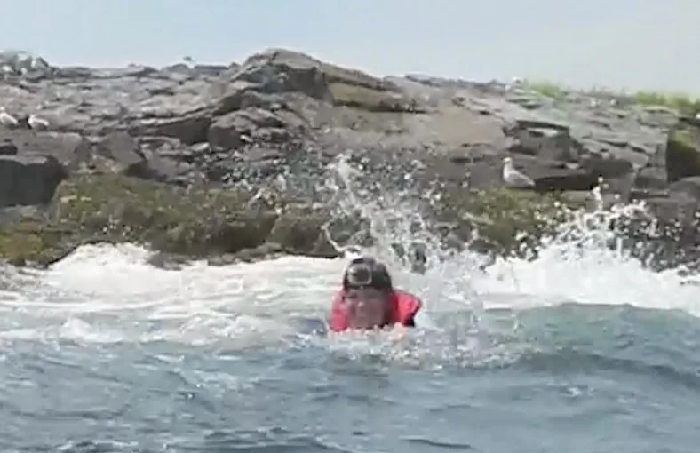
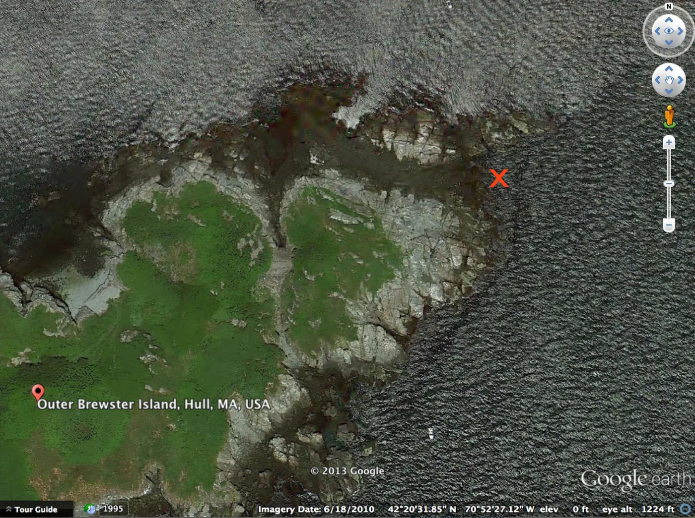

Blog · August 26, 2013
#HowILostMyGoPro and an open challenge to find it
Once upon a time there was a daring kayaker. She paddled the western waters of Outer Brewster Island, a beautiful rocky outcrop and the last bit of land before open Atlantic Ocean. She rode tidal rapids and took in the surreal landscape. Then she rounded the pointe. While exploring a cove on the eastern tip, a swell caught her broadside, capsizing the kayak and leaving a bobbing chick in the water for a couple fishermen to rescue.

Here is a wipeout vid and a challenge should you choose to accept it:
MISSION BRIEF
42°20’34.9″N 70°52’27.83″W
X marks the spot:

Reward: Beer, DInner and Glory
This is in fact more than a mission. It’s an open call adventure. I’m pleased to announce a new side project. In the works is a portal for GoPro owners to connect and explore together. Imagine if you knew everyone in your city with a GoPro. Imagine if during vacations you could team up with locals or other for adventures. Work hard; play hard. Stay tuned and in the mean time let’s find this camera!
First published on my old blog, amyrobinson.wordpress.com, August 26, 2013.